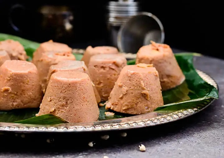

MOI MOI BEANS RECIPE

Brief Introduction
Moi Moi is a traditional Nigerian dish made primarily from steamed ground beans, typically black-eyed peas or brown beans. It’s a savory, flavorful dish that can be served as a side or as a main course, and it’s often enjoyed with rice, pap, or other Nigerian dishes.
To prepare Moi Moi, the beans are peeled and blended with ingredients like onions, peppers, tomatoes, and spices such as thyme and curry powder. It is then mixed with oil (usually vegetable or palm oil) to create a smooth batter. The mixture is often enriched with optional additions like boiled eggs, fish, or beef for extra flavor and protein.
Once the mixture is prepared, it is poured into individual molds or wrapped in banana leaves and steamed until firm. The result is a soft, moist cake with a savory, slightly spicy flavor. Moi Moi is a staple in Nigerian cuisine, particularly for special
Ingredients Needed to Prepare Moi Moi
Basic Ingridients
- Black-eyed peas (or brown beans): 2 cups (soaked and peeled)
- Red bell pepper: 1 large (or a mix of red and green peppers)
- Scotch bonnet pepper (optional, for heat): 1 or 2
- Onions:1 medium
- Tomatoes: 2 medium (optional, depending on recipe variation)
- Ground crayfish: 1-2 tablespoons (optional for flavor)
- Ground pepper: to taste
- Vegetable oil (or palm oil for a richer taste): 1/4 cup
- Salt: to taste
- Maggi or seasoning cubes: 1-2 (optional for extra flavor)
- Water: as needed to blend and adjust consistency
- Boiled eggs: 2-3 (optional, sliced for adding into the mixture)
- Fish (such as mackerel, optional, flaked or whole pieces): 1/2 cup or more for flavor (optional)
Steps Required to Prepare Moi Moi
Soak the Beans
- Soak the black-eyed peas (or brown beans) in water for about 2-3 hours to soften them. This will make it easier to peel them.
- After soaking, peel off the skins. You can do this by rubbing the beans between your palms in water, or by using a blender to help remove the skins.
Blend the Beans
- Add the peeled beans into a blender along with onions, red bell pepper, scotch bonnet pepper (if using), tomatoes (optional), and a little water.
- Blend until smooth. The consistency should be thick but pourable (add water as needed, but do not make it too runny).
Prepare the Flavoring
- In a bowl, combine the ground crayfish, ground pepper, and Maggi or seasoning cubes. You can also add some salt to taste.
- Add vegetable oil (or palm oil if you want a richer taste) to the blended mixture.
Mix and Adjust
- Mix the blended ingredients thoroughly to combine everything evenly. You can taste and adjust seasoning at this point (add more salt or seasoning cubes if needed).
Add Fillings (Optional)
- If you want to add boiled eggs, slice them into rings or halves, and stir them into the mixture.
- If using fish, flake it into small pieces and add it to the batter as well.
Prepare Steaming Setup
- If you're using Moi Moi molds, lightly oil them to prevent sticking.
- If you don’t have molds, you can use banana leaves to wrap individual portions. Cut the banana leaves into square or rectangular pieces and lightly oil them.
Pour the Mixture into Molds/Leaves
- Pour the batter into the molds or onto the center of the banana leaves, folding them to form a packet around the mixture.
- If you're using molds, fill them about halfway so the Moi Moi can expand as it cooks.
Steam the Moi Moi
- Place the filled molds or wrapped banana leaves into a steamer or a large pot with a steaming rack. Ensure that there's enough water at the bottom of the pot to generate steam.
- Cover the pot with a lid and steam on medium heat for about 45-60 minutes or until the Moi Moi is firm to the touch and has a slightly glossy appearance on top.
Check for Doneness
- To check if the Moi Moi is cooked, insert a toothpick or fork into the center; it should come out clean when done.
Serve
- Once cooked, remove the Moi Moi from the molds or banana leaves, allow to cool slightly, and serve with rice, pap, or on its own.
- Enjoy your homemade Moi Moi